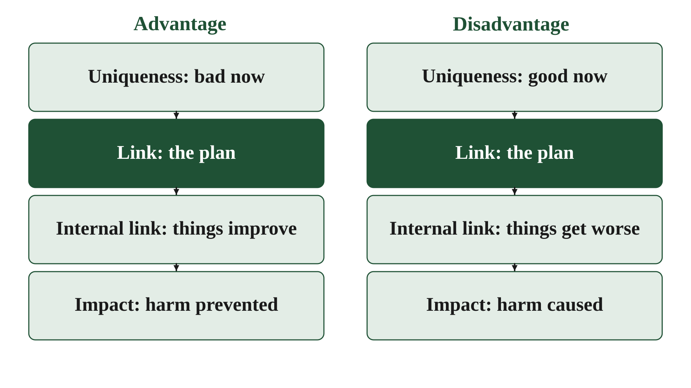

Chapter 17: Disadvantages and Case Answers
In this chapter
- Objectives
- Key terms
- The idea
- 17.1 The negative's two jobs
- 17.2 Disadvantage structure
- 17.3 Why uniqueness must say things are good
- 17.4 Links that respect fiat
- 17.5 Answering the case
- 17.6 Putting a negative strategy together
- Say it
- Worked examples
- A personal decision
- A national policy question
- How a judge weighs it
- Common mistakes
- Practice
- Check questions
Move: Build, Answer. Builds on: Chapters 14 and 15. Where you use it: every time you are negative in a policy debate.
Objectives
By the end of this chapter you should be able to:
- Write a disadvantage in the Uniqueness Model.
- Explain why a disadvantage's uniqueness must say things are good now.
- Write a link that respects fiat.
- Answer the affirmative case with inherency presses, solvency presses and case turns.
- Build a negative strategy that combines off-case and on-case arguments.
Key terms
Disadvantage, off-case, on-case, fiat, perception link, spillover link, link uniqueness, inherency press, solvency press, case turn, negative strategy.
The idea
17.1 The negative's two jobs
The affirmative proposes a change. The negative has two ways to show the change is a bad idea. It can argue that the plan does harm: that is a disadvantage, a reason the world of the plan is worse than the status quo. And it can argue that the affirmative's own case is wrong: the harms are not real, the status quo is already solving them, or the plan will not work. Debaters call arguments of the first kind off-case, because they are new positions separate from the affirmative's case, and arguments of the second kind on-case, because they answer the case directly. A strong negative usually does both.
17.2 Disadvantage structure
A disadvantage uses the same four parts as an advantage (Chapter 14), pointed in the opposite direction.
Uniqueness says things are good now, in the area the disadvantage is about. Link says what the plan does to change that. Internal link explains how that change makes things worse. Impact is the harm to people that results. In short: things are good now, the plan changes them, the change is bad, and here is how bad.
Take the AI policy resolution and a licensing plan. A negative might write a disadvantage about American AI leadership. Uniqueness: the United States currently leads the world in AI development, and that lead is holding. Link: the plan's licensing requirement slows American AI development. Internal link: slower development lets companies in other countries take the lead, moving jobs and investment with them. Impact: lost economic growth means lost jobs, and job loss pushes families into poverty, with all the health and life consequences that follow. Each step needs evidence, and Chapter 16's process works the same way here: start from the impact the literature supports and fill in the rest from the top.

17.3 Why uniqueness must say things are good
Chapter 14 explained that a shared impact cancels on the Scale: if a harm happens in both worlds, it cannot be a reason to choose either one. That is why every disadvantage needs uniqueness, and why its uniqueness has to point the right way.
The negative defends the status quo. For the plan to cause the impact, the impact must not be happening already. So disadvantage uniqueness must establish that the status quo is good, or at least stable, in the area of the disadvantage. If the negative's uniqueness evidence says American AI leadership is already slipping, the negative has told the judge the impact is coming anyway, and the affirmative will happily agree.
This creates a trap worth naming. When you research uniqueness, you will find plenty of evidence showing a trend getting worse. That evidence feels relevant, because it is about the right topic. But evidence that the status quo is declining is evidence against your disadvantage. Uniqueness evidence should say the good thing is happening and will continue unless something disrupts it. If the best evidence available says things are getting worse, you may need a different disadvantage.
A related idea is link uniqueness: the link must also be unique to the plan. If something already happening in the status quo would cause the same link, such as another law already slowing AI development, then the plan adds little, and the affirmative will argue the disadvantage is non-unique.
17.4 Links that respect fiat
Policy debate uses an agreement called fiat: for the purpose of the debate, everyone assumes the plan is adopted. The debate is about whether it should be, not whether Congress would actually pass it. Fiat keeps the debate on the merits.
Fiat has a consequence for disadvantage links. A link should be about what the plan does once it is in effect, not about the process of passing it. An argument like "the plan would never get through Congress" is not a disadvantage, because fiat assumes it does. And a link that depends on details the affirmative never committed to, like claiming the plan is attached to some other bill, describes a different plan; the affirmative will point out that its plan, as written, does nothing of the kind. Keep links tied to the plan text and to what the plan would actually do.
Chapter 14 mentioned two other kinds of link. A perception link runs through how someone reacts to the plan once it is in effect: investors, voters or a foreign government. A spillover link argues that the plan leads to similar action elsewhere, such as other states or countries copying it. Both respect fiat, because both start from the plan as adopted, and both need evidence that the reaction or the copying would actually happen.
17.5 Answering the case
On-case arguments go straight at the affirmative's stock issues. Two of the most useful are presses on inherency and solvency.
An inherency press argues that the status quo will solve the harm without the plan. If federal agencies are already writing AI safety rules, or if major AI companies have committed to the same safety testing the plan requires, the plan adds little. An inherency press does not need to prove the status quo solves everything; it shrinks the affirmative's advantage by showing that much of the benefit happens anyway.
A solvency press argues that the plan will not fix the harm. Licensing may not work if companies can train systems overseas, if the computing threshold is easy to avoid, or if the agency enforcing it lacks the expertise. Like an inherency press, a solvency press can be partial: "the plan solves some of the harm, but far less than the affirmative claims" is still a valuable argument, because it shrinks what goes on the affirmative's side of the Scale.
The most powerful on-case argument is a case turn: an argument that the plan makes the affirmative's own harm worse. If the affirmative claims licensing improves safety, a negative might argue that licensing drives development to less careful companies abroad, making AI less safe overall. A case turn gives the negative offense on the affirmative's own advantage. Chapter 18 covers turns in detail.
At a glance
| Argument | What it says | Effect on the Scale |
|---|---|---|
| Disadvantage | The plan causes a new harm | Adds weight to the negative's side |
| Inherency press | The status quo already solves much of the harm | Removes weight from the affirmative's side |
| Solvency press | The plan does not fix the harm, or fixes less of it | Removes weight from the affirmative's side |
| Case turn | The plan makes the affirmative's own harm worse | Moves weight to the negative's side |
17.6 Putting a negative strategy together
A negative strategy combines off-case and on-case arguments so they work together. A good strategy usually includes at least one disadvantage, so the negative has its own impact on the Scale, and on-case arguments that shrink the affirmative's advantages, so the disadvantage does not have to outweigh much.
The pieces should not contradict each other. A negative that argues the plan will not work at all (a total solvency press) and that the plan will slow American AI development dramatically (a disadvantage link) has a problem: if the plan does nothing, it cannot slow anything down. The affirmative will point that out. Choose arguments that fit together: a partial solvency press ("the plan solves very little safety risk") can sit beside a disadvantage ("but it still slows development") as long as you explain why both are true.
In the rebuttals, the negative collapses (Chapter 12), usually to the disadvantage plus the strongest case argument, and weighs: the disadvantage's impact against whatever is left of the advantage.
Say it
- Disadvantage: "Uniqueness: things are good now. Link: the plan changes that. Internal link: the change is bad. Impact: ..."
- Inherency press: "The status quo is already solving this, because..."
- Solvency press: "Even if the harm is real, the plan doesn't fix it, because..."
- Case turn: "The plan actually makes their harm worse..."
- Weigh: "The disadvantage outweighs what's left of their advantage, because..."
Worked examples
A personal decision
Resolution: Students who are undecided about a major should start at a community college.
The negative writes a disadvantage from the bottom: the impact is a delayed degree, which means delayed full-time earnings. Uniqueness: undecided students at four-year schools currently finish in a typical time when they use campus advising early. Link: starting at a community college separates them from the four-year advising system. Internal link: transfer students who change majors after transferring may need extra terms. Impact: a later graduation costs a year of full-time salary. On-case, the negative presses solvency: the affirmative's transfer guarantee only protects credits for some majors. The negative's ballot argument is that the disadvantage outweighs because lost salary is larger than the tuition saved.
A national policy question
Resolution: The United States federal government should substantially restrict the development of artificial intelligence.
The negative reads the AI leadership disadvantage from section 17.2, with uniqueness evidence that the American lead is holding. On-case, it reads an inherency press on the safety advantage (major developers already conduct safety testing) and a partial solvency press (licensing does not cover models trained abroad). It avoids a total solvency press, which would contradict the disadvantage's link. In the last rebuttal, it collapses to the disadvantage and the inherency press, and weighs: the affirmative's remaining safety benefit is small because most testing already happens, while the disadvantage costs jobs and growth now.
How a judge weighs it
A judge compares the worlds: what is left of the affirmative's advantages after the on-case arguments, against what the negative has won on its disadvantages. On-case arguments rarely win a debate alone, because a small advantage still beats nothing; the negative usually needs its own impact on the Scale. Judges also notice when negative arguments contradict each other, and they hold the contradiction against the negative.
Common mistakes
- Uniqueness evidence that shows decline. Disadvantage uniqueness must say things are good now.
- Links that ignore fiat. Argue about what the plan does, not whether it would pass.
- Contradictory negative arguments. A plan that does nothing cannot also cause a disaster.
- Only arguing on-case. Shrinking the advantage is not enough if nothing is on your side of the Scale.
- Forgetting the impact. A disadvantage without a terminal impact gives the judge nothing to weigh.
Practice
Drill: disadvantage in twenty (20 minutes, small groups). Your instructor gives a policy resolution, such as "The United States should ban the sale of new gasoline-powered cars by 2035." Write a complete disadvantage with at least one uniqueness, link, internal link and impact argument, supported by at least three warrants. Check that your uniqueness says things are good now.
Drill: press and turn (15 minutes, pairs). For an advantage your partner has written, write one inherency press, one solvency press and one case turn. Your partner says which is strongest and why.
Writing exercise. Write a negative strategy against the licensing plan: one disadvantage and two on-case arguments. In 150 words, explain why the arguments do not contradict each other and which you would collapse to.
Check questions
Choose an answer to see feedback. Nothing is recorded.
1. What must a disadvantage's uniqueness establish?
2. A negative's uniqueness evidence says American AI leadership is already slipping. What's the problem?
3. What does fiat mean in policy debate?
4. "Major AI developers already run the safety tests the plan requires." What kind of argument is this?
5. Why is it a problem to run a total solvency press alongside a disadvantage?